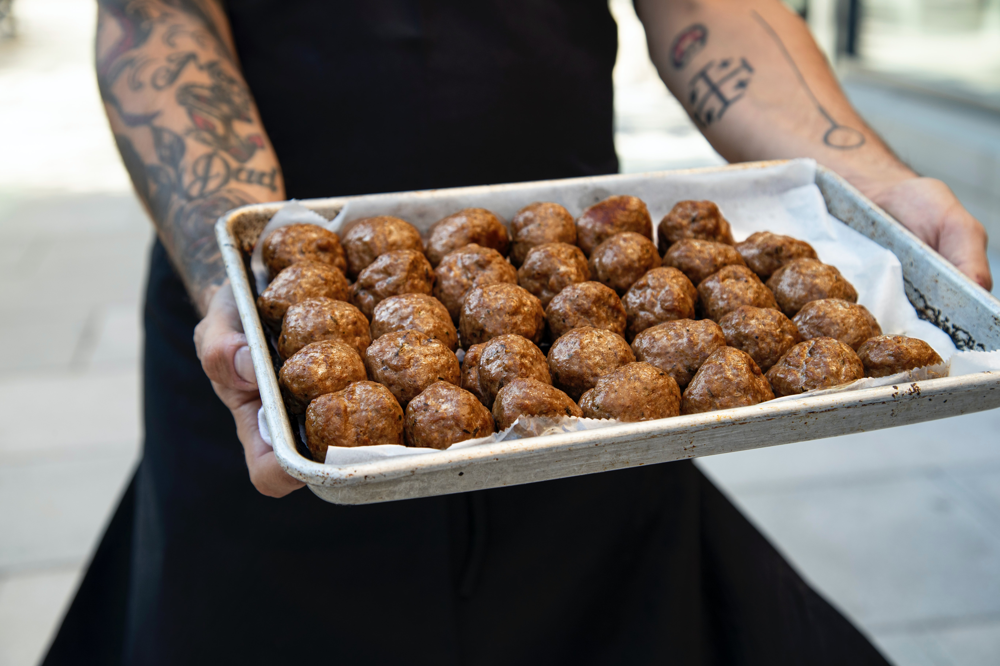

Swedish Meatballs

Needed ingredentS
-
2 cups bread crumbs (fresh bread works better then prepared crumbs)
- 2/3 cup milk
- ½ cup chopped onion
- 2 pounds ground beef
- 2 eggs, beaten (I beat them until frothy with egg beater)
- 2 teaspoon salt
- ¼ teaspoon pepper
- 1 ¼ teaspoon nutmeg
-
Campbell's onsommé or bouillon soup or bouillon cubes & boiling water.
Amount depends on number of meatballs.
Steps
- Add onion, meat, eggs & seasonings. Mix thoroughly with hands.
- Shape into 1-inch balls.
-
Sauté in part butter & part oil or shortening. Then add the soup or
bouillon & simmer about 30 minutes. I get between 70 & 80 meatballs
depending on the size.
-
I cook them completely & just heat thoroughly the next day or whenever
I’m ready to use them.
-
Always take off the fat that accumulates before heating them & scoop a
little of the juice into the chafing dish which helps keep the meat
balls hot.
Top of Page
Photo by
Clark Douglas
on
Unsplash